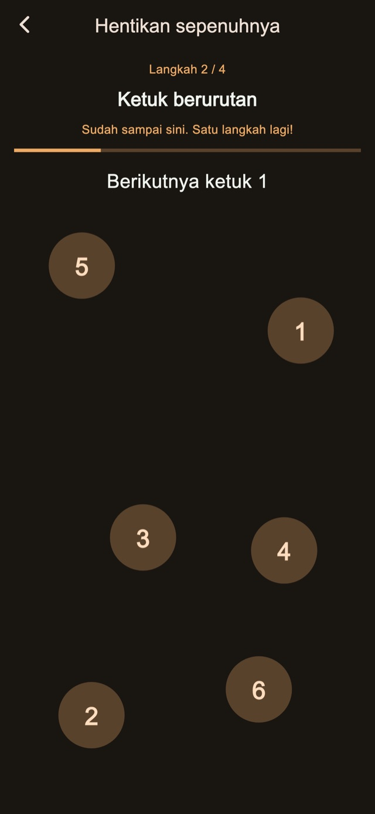
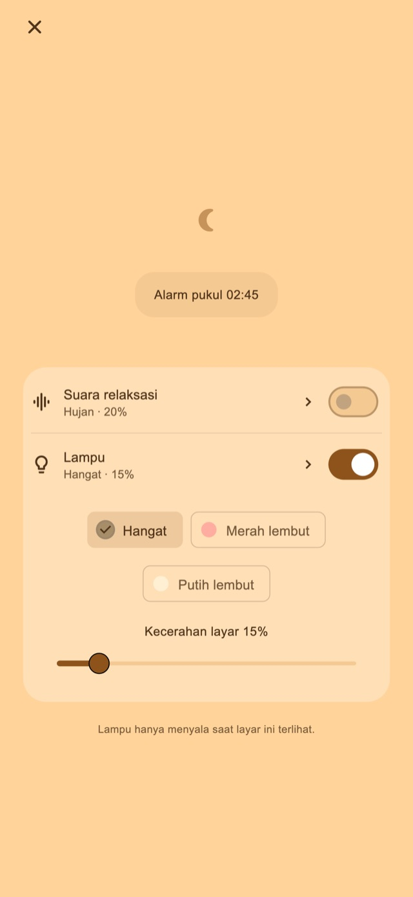

Suara relaksasi
Dengarkan hujan, ombak atau derau putih. Suara hanya mulai saat dinyalakan dan memudar hingga berhenti pada alarm pertama.
Alarm getar untuk tidur singkat dan bangun setelah menidurkan anak
Untuk yang kebablasan tidur siang atau ikut tertidur saat menidurkan anak.
01Pola getaran
Durasi dan ritme yang berubah terasa berbeda dari notifikasi sehari-hari. Rasa yang tidak biasa ini dirancang untuk membantu Anda menyadari alarm dan bangun.
Pulsa pendek, panjang dan beruntun. Pilih dari empat mode dasar: acak, gaya notifikasi, dominan panjang atau dominan pendek. Durasi dan jeda bervariasi agar ritmenya berubah. Coba sebelum memasang alarm.
Pola getaran
02Beberapa pengingat
Hentikan hanya pengingat saat ini untuk mempertahankan berikutnya, atau akhiri rangkaian untuk membatalkan sisanya.
Menyimpan jumlah dan interval adalah fitur Premium.
Beberapa pengingat
Akhiri setelah bangun
03Tugas berhenti
Hitungan, mengetuk angka berurutan, menahan dan mengetuk berulang menyertai penghentian dan tunda. Langkah standar sudah tersedia. Mengedit dan menggabungkan langkah memerlukan Premium.

Layar Malam
Sesuaikan kecerahan dan tampilan jam. Sembunyikan tampilan setelah beberapa saat tanpa interaksi, lalu ketuk untuk menampilkan jam dan kontrol kembali.
Pilih durasi, misalnya 30 menit, atau waktu bangun.
Biarkan layar malam terbuka; nyalakan suara atau cahaya bila ingin.
Selesaikan langkah berhenti dan akhiri rangkaian setelah bangun.
Suara santai dan cahaya
Untuk tidur singkat atau menidurkan anak. Nyalakan dari layar malam saat diperlukan.
Dengarkan hujan, ombak atau derau putih. Suara hanya mulai saat dinyalakan dan memudar hingga berhenti pada alarm pertama.
Pilih cahaya hangat, merah muda pucat atau putih lembut dan atur kecerahannya.
Fitur dasar gratis

Gratis / Premium
Empat mode getaran, berhenti dan tunda standar, layar malam, suara dan cahaya sudah termasuk. Beberapa layar menampilkan iklan.
| Fitur | Gratis | Premium |
|---|---|---|
| Pola getaran | ✓ | ✓ |
| Beberapa pengingat | Pengaturan standar | Bisa disesuaikan |
| Tugas berhenti | Pengaturan standar | Bisa disesuaikan |
| Layar Malam / Suara relaksasi / Lampu | ✓ | ✓ |
| Buat dan edit pola getaran sendiri. | — | ✓ |
| Hapus semua iklan. | — | ✓ |
Pilih paket bulanan atau pembelian satu kali. Paket bulanan diperpanjang otomatis dan dapat dikelola atau dibatalkan melalui pengaturan akun toko. Periksa harga dan ketentuan di layar pembelian.
Tanya jawab
Untuk pola getaran khusus aplikasi, biarkan layar malam terbuka setelah memasang alarm. Mengunci dengan tombol samping atau beralih aplikasi membuat getaran dikendalikan iOS; pola dan kekuatan pilihan tidak berlaku. Periksa izin dan pengaturan getaran perangkat, lalu uji sebelum digunakan.
Dengarkan hujan, ombak atau derau putih. Suara hanya mulai saat dinyalakan dan memudar hingga berhenti pada alarm pertama. Pilih cahaya hangat, merah muda pucat atau putih lembut dan atur kecerahannya.
Empat mode getaran, berhenti dan tunda standar, layar malam, suara dan cahaya sudah termasuk. Beberapa layar menampilkan iklan. Hapus semua iklan. Atur jumlah pengingat dan jedanya. Edit langkah berhenti dan tunda. Buat dan edit pola getaran sendiri. Pilih paket bulanan atau pembelian satu kali. Paket bulanan diperpanjang otomatis dan dapat dikelola atau dibatalkan melalui pengaturan akun toko. Periksa harga dan ketentuan di layar pembelian.
Unduh
Alarm getar untuk tidur singkat dan bangun setelah menidurkan anak
Fitur dasar gratis
iPhone: iOS 26.1+ / Android: 8.0+